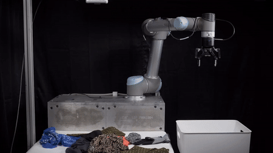
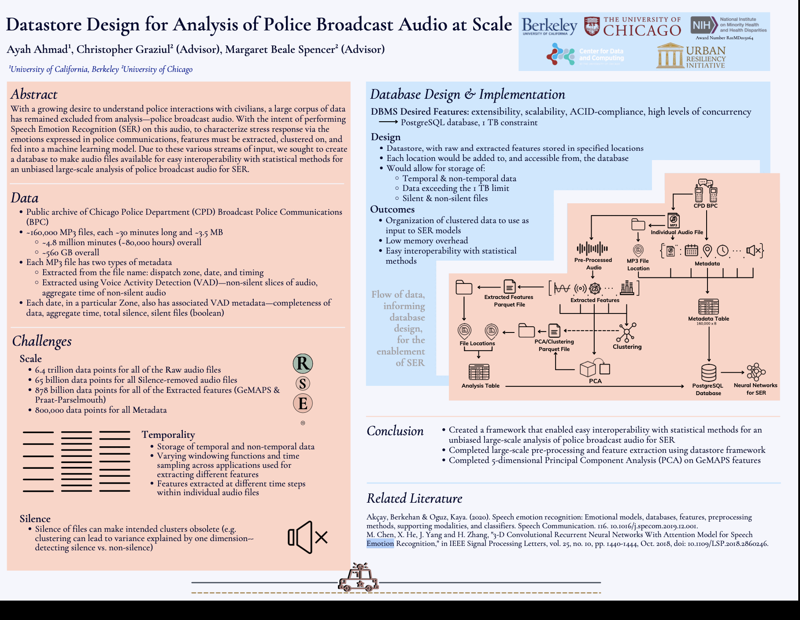

|
Hi, I'm Ayah! I'm a Robotics PhD student at Georgia Tech, advised by Professor Maegan Tucker in the Dynamic Mobility Lab. My research interests broadly lie in the realm of biomechanics and exoskeleton control. I received a B.S. in Electrical Engineering and Computer Science from UC Berkeley in 2023. There, I worked under Professor Ken Goldberg on robotics projects ranging from robotic grasping and manipulation, to vision-language perception. I also worked with Professors Christopher Graziul and Margaret Beale Spencer at the University of Chicago, on computational social science and speech emotion recognition.
|
|
* indicates equal contribution
|
|  |
Aviv Adler*, Ayah Ahmad*, Yulei Qiu*, Shengyin Wang, Wisdom C. Agboh, Edith Llontop, Tianshuang Qiu, Jeffrey Ichnowski, Thomas Kollar, Richard Cheng, Mehmet Dogar, Ken Goldberg Workshop on the Algorithmic Foundations of Robotics (WAFR), 2024 paper This paper proposes a hybrid approach combining depth-based and segment-based methods to efficiently remove scattered garments from a surface. |
 |
Adam Rashid*, Chung Min Kim*, Justin Kerr*, Letian Fu, Kush Hari, Ayah Ahmad, Kaiyuan Chen, Huang Huang, Marcus Gualtieri, Michael Wang , Christian Juette, Nan Tian, Liu Ren, Ken Goldberg IEEE International Conference on Robotics and Automation (ICRA), 2024 paper / website Lifelong LERF is a method for efficient semantic monitoring using a mobile robot that optimizes a dense language and geometric representation of its surroundings. |
 |
Kishore Srinivas, Shreya Ganti, Rishi Parikh, Ayah Ahmad, Wisdom Agboh, Mehmet Dogar, Ken Goldberg IEEE Conference on Automation Science and Engineering (CASE), 2023 paper / website The "Busboy Problem" addresses the problem of efficiently clearing tableware from a flat surface by using multi-object grasping. |
 |
Lawrence Yunliang Chen, Baiyu Shi, Roy Lin, Daniel Seita, Ayah Ahmad, Richard Cheng, Thomas Kollar, David Held, Ken Goldberg IEEE/RSJ International Conference on Intelligent Robots and Systems (IROS), 2023 paper / website SLIP-Bagging addresses the problem of autonomous bagging by using Interactive Perception to grasp single layers of bags. |
|  |
Ayah Ahmad, Christopher Graziul, Margaret Beale Spencer ACM International Conference for High-Performance Computing, Networking, Storage, and Analysis (Supercomputing), 2021 (SC21 ACM SRC Undergraduate 1st Place Award, ACM SRC Grand Finals Candidate) poster / abstract This paper describes preliminary work towards enabling Speech Emotion Recognition (SER) in an analysis of the Chicago Police Department’s (CPD) BPC by demonstrating the pipelined creation of a datastore to enable a multimodal analysis of composed raw audio files. |
|
Recipient of the 2023 Outstanding Graduate Student Instructor Award |
 |
EECS 127: Optimization Models in Engineering
[FA23] Tutor |
 |
EECS 16A: Designing Information Devices and Systems I
[SP23] Head Homework & Discussion uGSI, [FA22] Admin & Discussion uGSI, [SP22] Tutor [FA21] Tutor |
|
CS 61A: Structure and Interpretation of Computer Programs
[SP21] CSM Junior Mentor [SP21] Academic Intern |
|
Website source code from Jon Barron. |